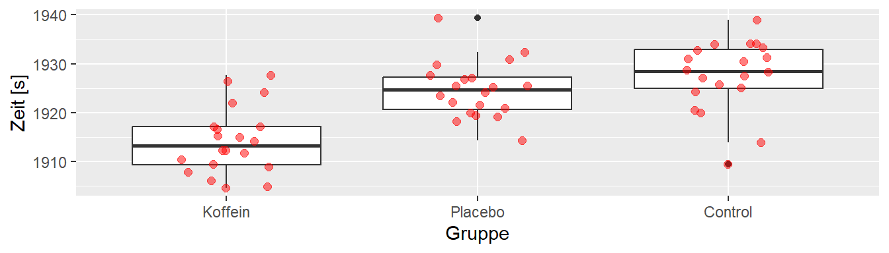

21 Completely Randomized Design
Das erste experimentelle Design, das wir uns anschauen, ist das completeley randomized design. Wir haben unterschiedliche experimentelle Konditionen von denen wir ausgehen, dass diese sich unterschiedlich auf die experimentellen units (EU) auswirken. Beispielsweise wollen wir die Balancierfähigkeit unter drei verschiedenen Konditionen untersuchen, z.B. auf festem Untergrund, auf weichem Untergrund und auf wackeligen Untergrund. Die Balancierfähigkeit ist aber auch durch zahlreiche andere Einflussfaktoren beeinflusst, z.B. Vorerfahrung, Kraftfähigkeit etc. Viele von diesen kennen wir vielleicht gar nicht bzw. für diese zu kontrollieren wäre zu aufwendig. Um diese Störgrößen zu kontrollieren setzen wir Randomisierung ein. Jeder einzelne Versuchsteilnehmer bzw. Versuchsteilnehmerinn soll daher randomisiert auf eine der drei Kondition verteilt werden. Damit werden die Teilnehmer(innen) zu den EUs. Nach Durchsicht der Literatur könnte die Balancierfähigkeit z.B. mit einer Kraftmessplatte erfasst werden. Hieran schließt sich noch die Festsetzung der observational units, d.h. in diesem Falle, der Anzahl der Messwiederholungen an um die Reliabität auf ein gewünschtes Niveau zu heben. Diesen Teil vernachlässigen wir zunächst einmal.
21.1 Das Modell
Um diesem Design ein statistisches Modell anzupassen, müssen wir uns nun Gedanken über den DGP machen. Zunächst einmal wir jede(r) Teilnehmer(in) eine bestimmte Balancierfähigkeit haben. Bzw. wenn wir die Kondition mit dem festen Untergrund als eine Referenzkondition festlegen, können wir davon ausgehen, dass es eine mittlere Balancierfähigkeit gibt und die einzelnen Personen aus der Population um diesen Mittelwert schwanken.
\[ Y_{ij} = \mu + \tau_i + \epsilon_{ij}, \qquad \epsilon_{ij}\sim \mathcal{N}(0,\sigma^2) \]
i = Gruppenindikator, j = experimental unit-indikator, \(\mu\) = Gesamtmittelwert,
21.2 Annahmen
- Unabhängige Experimental Units (EU)
- Die EUs sind zufällig in die k Gruppen eingeteilt worden
- Die Varianzen \(\sigma_i\) in jeder Gruppe \(i\) sind gleich
- Die Werte in jeder Gruppe sind Normalverteilt \(Y_{ij} \sim \mathcal{N}(\mu_i, \sigma)\)
21.3 Analyse mittels Modellhierarchien
21.3.1 Full model
\[ Y_{ij} = \mu^* + \tau_2^* x_{1j} + \ldots + \tau_k^* x_{(k-1)j} + \epsilon_{ij} \]
mit \[\begin{align*} \mu^* &= \mu + \tau_1 \quad\textrm{Referenzstufe} \\ \tau^*_i &= \tau_i - \tau_1 \quad\Delta\textrm{ von Stufe i zur Referenzstufe} \end{align*}\] und \(x_{ij}\) als Dummyvariablen.
21.3.2 Reduced model
\[ Y_{ij} = \mu + \epsilon_{ij} \]
21.4 Teststatistik
\[ F = \frac{\textrm{SSE(R)} - \textrm{SSE(F)}}{\textrm{df}_R - \textrm{df}_F} \frac{\textrm{df}_F}{\textrm{SSE(F)}} \sim F(\textrm{df}_R-\textrm{df}_F,\textrm{df}_F) \]
21.4.1 Statistische Hypothesen
\[\begin{align*} H_0:& \tau_1 = \tau_2 = \ldots = \tau_k = 0 \\ H_1:& \exists\tau_i \neq \tau_j\ \textrm{mit}\ i \neq j, i,j \in \{1,2,\ldots,k\} \end{align*}\]
21.5 Verbindung Modellhierarchien und BA-ANOVA
Im Bachelor wurde das completely randomized design aller Wahrscheinlichkeit nach unter der Bezeichnung Einfaktorielle ANOVA eingeführt. Was eigentlich nicht viel Sinn macht, da es sich bei der einfaktoriellen ANOVA um eine Analysemethode und streng genommen nicht um ein experimentelles Design handelt. Wie auch immer,
\[\begin{equation} \sum_i (y_i - \hat{y}) = \sum_i y_i - n \hat{y} = n \hat{y} - n \hat{y} = 0 \label{eq-ed-crd-bar-sum} \end{equation}\]
\[\begin{align} \begin{split} \sum_i \sum_j 2 (y_{ij} - \hat{y}_j)(\hat{y}_j - \hat{y}) &= \sum_j \sum_i 2 (y_{ij} - \hat{y}_j)(\hat{y}_j - \hat{y}) \\ &= 2 \sum_j (\hat{y}_j - \hat{y}) \underbrace{\sum_i (y_{ij} - \hat{y}_j)}_{\text{mit} ~(\ref{eq-ed-crd-bar-sum})=0}\\ &= 2 \sum_j (\hat{y}_j - \hat{y}) 0 = 0 \\ \end{split} \label{eq-ed-crd-cross-sum} \end{align}\]
\[\begin{align} \begin{split} \underbrace{\sum_i \sum_j (y_{ij} - \hat{y})^2}_{SS_{\text{Total}}} &= \sum_i \sum_j (y_{ij} - \hat{y}_j + \hat{y}_j - \hat{y})^2 \\ &= \sum_i \sum_j (y_{ij} - \hat{y}_j)^2 + \sum_i \sum_j (\hat{y}_j - \hat{y})^2 - \underbrace{\sum_i \sum_j 2 (y_{ij} - \hat{y}_j)(\hat{y}_j - \hat{y})}_{\text{mit}~(\ref{eq-ed-crd-cross-sum})=0}\\ &= \underbrace{\sum_i \sum_j (y_{ij} - \hat{y}_j)^2}_{SS_{\text{Error}}} + \underbrace{\sum_i \sum_j (\hat{y}_j - \hat{y})^2}_{SS_{\text{Regression}}} \end{split} \label{eq-ed-crd-sse-total} \end{align}\]
\[\begin{align*} SSE(R) - SSE(F) &= \sum_i \sum_j (y_{ij} - \hat{y})^2 - \sum_i \sum_j (y_{ij} - \hat{y}_j)^2 \\ &= \underbrace{\sum_i \sum_j (y_{ij} - \hat{y}_j)^2 + \sum_i \sum_j (\hat{y}_j - \hat{y})^2}_{\text{mit}~\eqref{eq-ed-crd-sse-total}} - \sum_i \sum_j (y_{ij} - \hat{y}_j)^2 \\ &= \sum_i \sum_j (\hat{y}_j - \hat{y})^2 \\ \end{align*}\]
\[ QS_{zwischen} = \sum_{j=1}^K \sum_{i=1}^{N_j} (\bar{x}_{j}-\bar{x})^2 \]